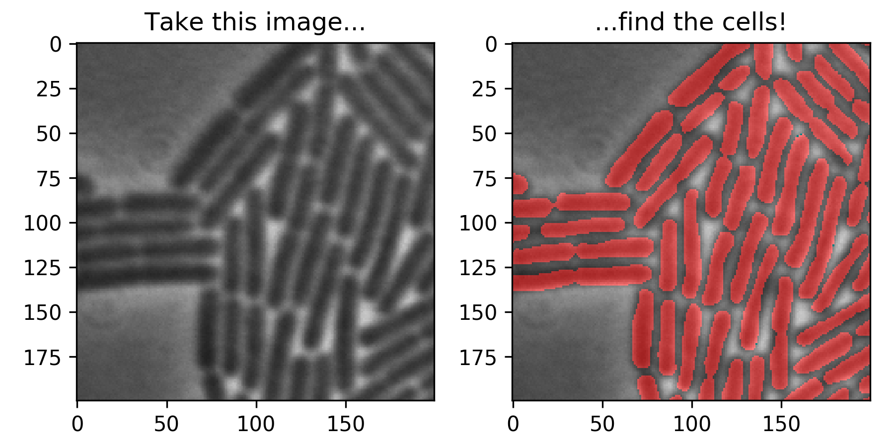
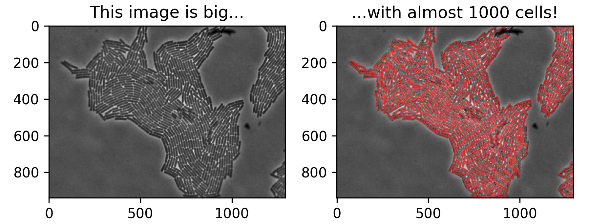

18 September 2017
Segmentation 1 - Intro
Extracting value from data takes work. People like saying “data is the new oil” to emphasize data’s inherent value, and perhaps just as importantly the work required to transform raw data into something valuable. It turns out extracting value can take lots of skilled work.
Let’s walk through such a process using an example near and dear to my heart - finding individual cells in microscopy images. Here’s an example!

You may be asking yourself, “Why on earth did he pick this example?”
Here’s why - I spent years of my systems biology PhD analyzing tens of thousands of these images, to understand the biology of how genes control cells. Our lab automated this process using good software. Unfortunately, each new cell shape required us to design and write custom software. Some cells, like bacteria, were rod shaped. Some, like baker’s yeast, were spherical. Some, like stem cells, were weirdly shaped blobs that looked like they came from a discarded Salvador Dali painting. Some shapes were so complicated we couldn’t figure out the right rules to find cells.
A general purpose method to find arbitrary cell types would have been extremely valuable. The method described in these posts provides a starting point to such a general tool.
Why not pick cells out by by hand? Well, that’s one of the most soul-sucking things you can do in front of a computer. Consider this typical phase contrast microscopy image of a Bacillus subtilis bacteria microcolony taken at 100x magnification.

If you want to label an image like this by hand, good luck - enjoy the next several hours of your life drawing little red blobs. I did this once, tracing them one at a time using the specialized microscopy software ImageJ. This took several (and here several does not mean 3) hours. :(
There’s a name for this process - “segmentation.” At the most basic level, segmentation involves classifying each pixel in an image as a certain type. Here, types are either a cell (in red, above), or something else.
Let’s teach a computer how to segment these images automatically, so we don’t have to!

A first thought might be to classify each pixel by its intensity. Maybe cell pixels are darker and background pixels are lighter. What could be simpler, easier, or faster? Unfortunately, this approach hits a brick wall fast, which you can see by looking at the distributions of pixel intensities in the image. There’s lots of overlap, and it’s impossible to accurately classify pixels by intensity alone.
Since we can’t classify pixels by intensity alone, we need to use extra information. Looking at a pixel’s neighbors gives us this extra information. For example, cell pixels tend to be surrounded first by other dark cell-like neighbors and then brighter pixels corresponding to spaces between the cells. Background pixels tend to be surrounded by other pixels of fairly uniform intensity. In the following, therefore, we’ll use a patch centered on each pixel of interest to classify it.
Although we can see a difference between these two patches by eye, it’s hard to figure out what explicit features discriminate cell pixels from background pixels when using image patches. Even if we knew these features, it would be hard to figure out how to precisely and effectively combine them into rules to classify image patches. We therefore turn to statistical machine learning (ML) techniques. These powerful techniques perform extremely well in computer vision tasks. We’ll thus adapt them to our pixel-patch classification task. Specifically, given a set of representative pixel-patches from our task whose labels are known (a ‘training set’), these ML techniques will learn features and rules to effectively classify other pixel-patches coming from the same distribution.
We’re going to use a specific technique - ‘deep learning’ based convolutional neural networks (CNNs) - that’s currently very popular and successful. If you’re not familiar with deep learning or convolutional networks for image classification in general, the following class provides an excellent introduction.
These posts will walk us step by step through implementing these methods. We’ll implement examples using short, simple Python scripts in Google’s Tensorflow environment. In particular, these posts will:
- Demonstrate training simple convolutional neural network to segment cells in microscopy images pixel-by-pixel.
- Explore how simple variations in network architecture affect segmentation accuracy.
- Accelerate a naive implementation almost 1000x by using published algorithms to make the network ‘fully convolutional.’
A final note - if you’re looking for a great peer-reviewed research article on this subject, I can do no better than to point you to this fantastic paper by my friend David van Valen. Please also check out his DeepCell software and give it a try!